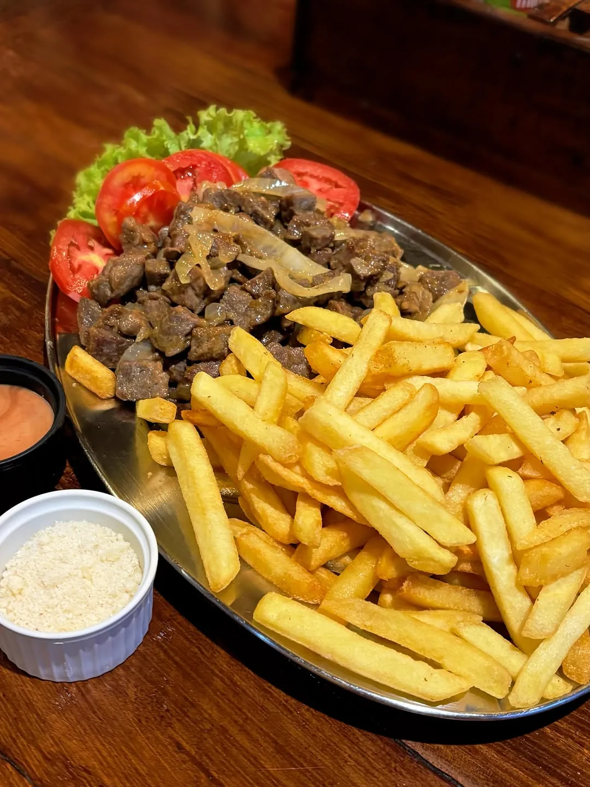
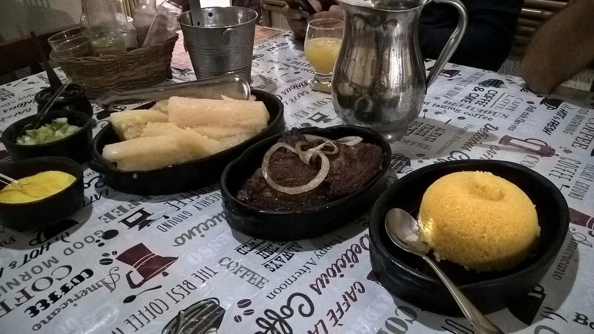
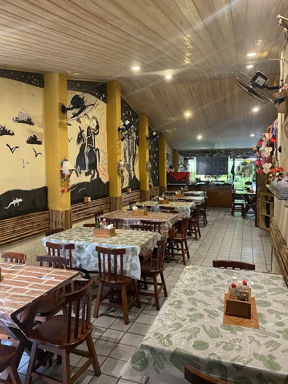
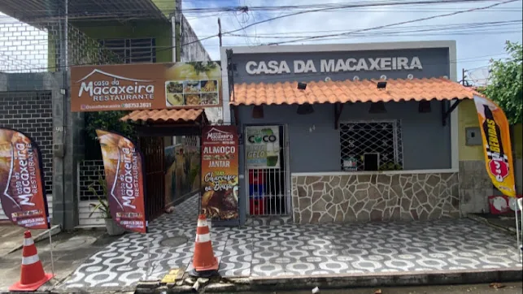

Poço, Maceió · Alagoas
Casa da
Macaxeira.
Culinária nordestina em Maceió.
Macaxeira, carne de sol e cuscuz. A mesa tem o sabor do Nordeste e um endereço no Poço.
Todos os dias, 11h às 23h
Praça 13 de Maio, 84

O nome já dá a pista
A macaxeira
é o começo.
Ela dá nome à casa.
E lugar à carne de sol.
A combinação de macaxeira com carne de sol está entre os destaques do cardápio. Cuscuz, charque e caldinhos também fazem parte dessa mesa.
Veja os sabores da casa
Além do prato
Tem jeito de casa.
Madeira, murais e mesas para se encontrar.
A culinária nordestina também aparece no espaço.

Para quem mora em Maceió.
Para quem está chegando agora.
Encontre a Casa da Macaxeira no bairro do Poço, na Praça 13 de Maio.
Planeje a visitaImagens do ambiente: acervo público de 2023. Veja registros recentes no Instagram da casa (abre em nova aba).
Seu caminho até a mesa
A casa fica
no Poço.
Praça 13 de Maio, 84Poço · Maceió, AL
CEP 57025-420
11h às 23h
Em feriados, confirme o horário com a equipe.

Na casa ou na sua casa
Vamos combinar
o seu pedido?
Cardápio, entrega ou retirada.
Fale com a equipe pelo WhatsApp.
Consulte o que está disponível, a área de entrega, a taxa e o prazo antes de pedir.
Conversar sobre meu pedidoVai visitar com um grupo?
Fale com a equipe para consultar mesas e a possibilidade de reserva.